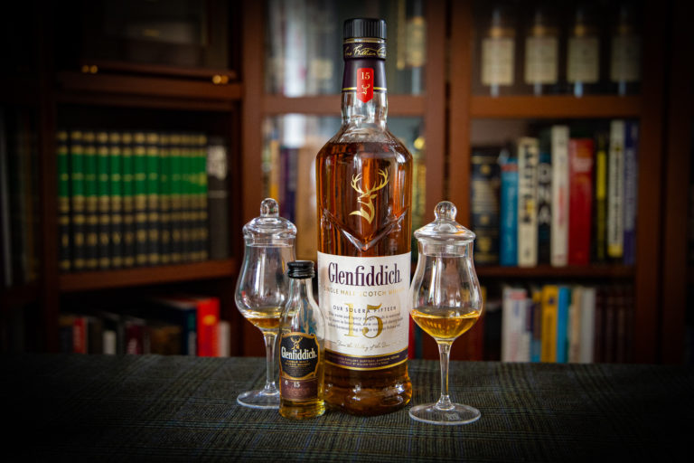
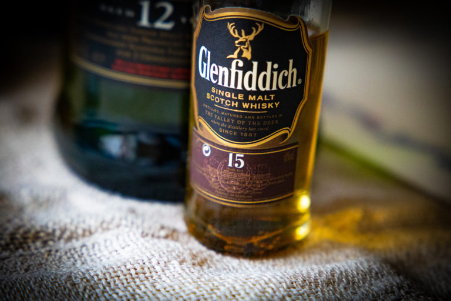

Glenfiddich 15 YO - Co daje kadź Solera ?
Przejdź do notki smakowej >>Whisky Glenfiddich 15 yo Solera ma długa historię, która zaskarbiła tej destylarni wielu zwolenników. Przez lata na rynku pojawiło się kilka wersji, a ja dzisiaj omówię dla Was edycję „Our Solera Fifteen”, której premiera miała miejsce w 2019 roku.
Oczywiście najsławniejszą whisky ze stajni destylarni Glenfiddich jest Glenfiddich 12 yo. Być może jednak najbardziej cenioną za wysoki stosunek jakości do ceny jest Glenfiddich 15 yo, która od połowy 2019 roku nazywa się „Our Solera Fifteen”, a wcześniej nazywała się „Solera Reserve” i „Solera Vat”.

Do leżakowania Glenfiddich Solera Fifteen wykorzystuje się 3 rodzaje beczek:
- po bourbonie – ponownego wypełnienia
- beczki po sherry
- z dębu wcześniej nieużywanego
Po leżakowaniu w wymienionych beczkach, Glenfiddich leżakuje dodatkowo w szczególny sposób. Jest on interpretacją sławnego procesu solera wykorzystywanego do leżakowania hiszpańskiego wina wzmacnianego sherry. Destylaty Glenfiddich z różnych beczek poddawane są kupażowi w ogromnej kadzi, która nigdy nie jest opróżniania bardziej niż do połowy. Ponieważ Glenfiddich 15 yo po raz pierwszy pojawiła się na rynku w 1998 roku, kadź do leżakowania w systemie solera dla wersji 15yo nigdy nie została jeszcze opróżniona!

Kolor: Jasny olej
Nos: Mleczna czekolada, karmelowe cukierki, powidła śliwkowe, cola, likier jajeczny,marcepan, sherry Pedro Ximenez, stare drewno na starym strychu (czuję jakbym przechadzał się po piwnicach destylarni i wąchał ten cudowny zapach). Alkohol świetnie ukryty.
Smak: Orzechy Pekan, cappuccino, półwytrawne Sherry, kolorowy pieprz, maliny, rodzynki, dojrzałe, soczyste gruszki, skórka limonki, imbir. Niestety, trochę wodnista, ale i tak smakuje rewelacyjnie
Finisz: Zaskakująco długi jak na filtrowaną na zimno, butelkowaną w mocy 40% Whisky. Imbir, goździki, karmel, czarna herbata, Sherry
Ocena:83/100
Nos: Mleczna czekolada, karmelowe cukierki, powidła śliwkowe, cola, likier jajeczny,marcepan, sherry Pedro Ximenez, stare drewno na starym strychu (czuję jakbym przechadzał się po piwnicach destylarni i wąchał ten cudowny zapach). Alkohol świetnie ukryty.
Smak: Orzechy Pekan, cappuccino, półwytrawne Sherry, kolorowy pieprz, maliny, rodzynki, dojrzałe, soczyste gruszki, skórka limonki, imbir. Niestety, trochę wodnista, ale i tak smakuje rewelacyjnie
Finisz: Zaskakująco długi jak na filtrowaną na zimno, butelkowaną w mocy 40% Whisky. Imbir, goździki, karmel, czarna herbata, Sherry
Ocena:83/100